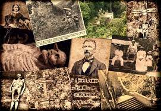
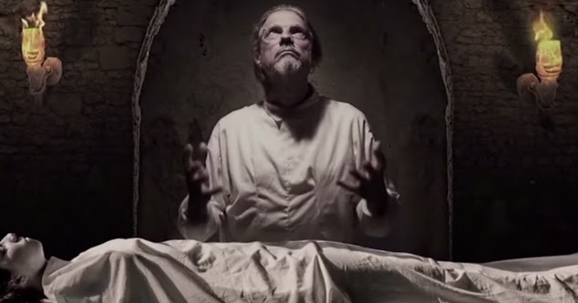
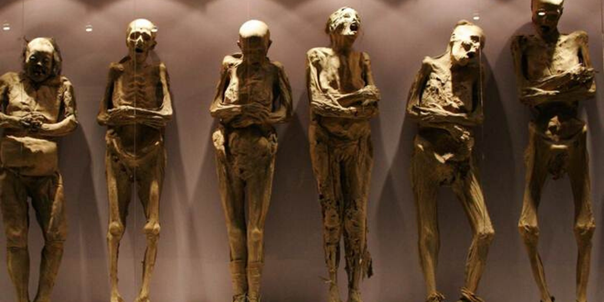
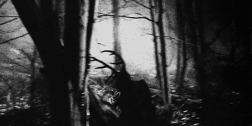

Viajamos a la ciudad de Caracas, específicamente al hermoso Cerro El Ávila, lugar donde no sólo se cuentan historias de belleza natural sino también oscuras leyendas venezolanas que harán temblar hasta a los más valientes y te harán pensar dos veces antes de recorrer a oscuras por sus largos caminos.
Gottfried August Knoche, más conocido como el Doctor Knoche, fue un embalsamador alemán que vivió por muchos años en el pueblo de Galipán durante la época de la Guerra Federal. Debido a que es uno de los personajes más misteriosos de la historia de Venezuela, son muchas las versiones que se conocen acerca de sus métodos de embalsamamiento y preservación de los cadáveres.
La más contada fue que este Doctor hizo un trato faustiano (un pacto con el diablo) para crear un “líquido que ayude a preservar durante muchos años el cuerpo de los muertos” a cambio de las almas de las personas que embalsamaba. Satanás aceptó el trato y le dio un líquido con el que preservaría durante muchos años los cuerpos momificados.
Se dice que el Doctor Knoche embalsamó más de 100 cadáveres, entre esos la mayoría de los cuerpos no reclamados durante la Guerra Federal, incluyendo el cuerpo de su hija y su yerno. Su laboratorio se encontraba en la hacienda Buena Vista, en las cercanías del pueblo de Galipán, convirtiendo este lugar en un sitio lleno de misterios dentro de la montaña.
Aunque hoy en día la hacienda es un museo que puedes visitar, algunos lugareños cuentan que en las noches se pueden escuchar las almas en pena de los soldados y personas que embalsamó, haciendo del sitio un lugar maldito donde podrás ver apariciones fantasmales o escuchar gritos de agonía de las almas que jamás pudieron descansar en paz.
El Dr Knoche y sus momias se posicionan como una de las Leyendas venezolanas más escuchadas en el Ávila.
Escrito por Juan Aulacio